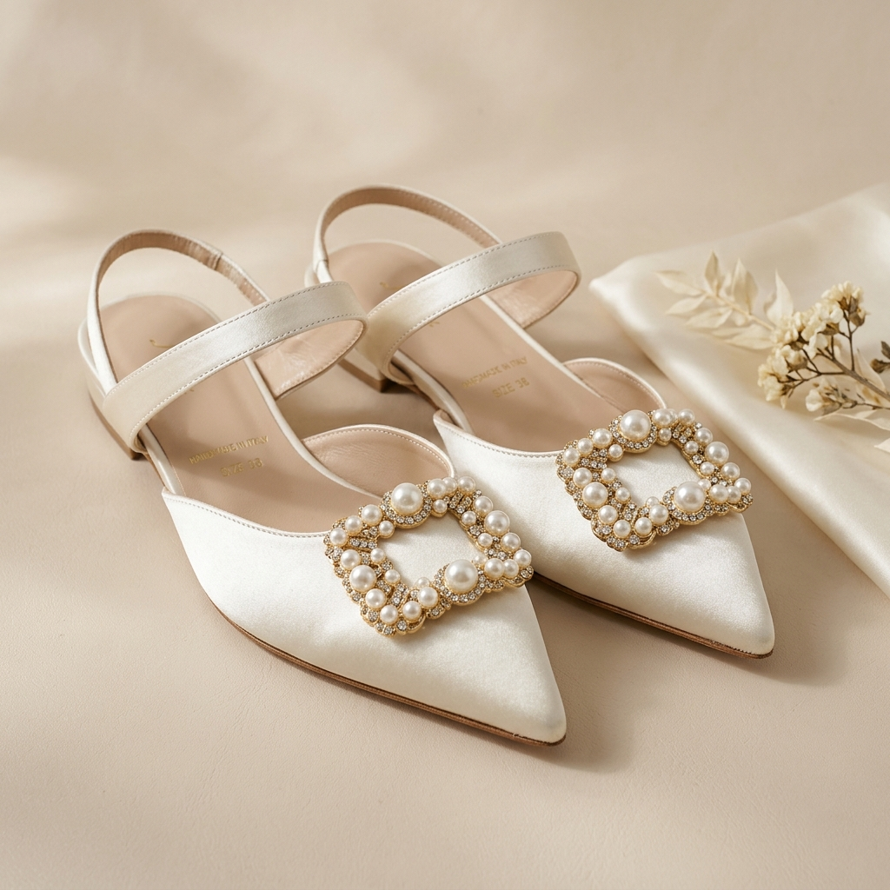
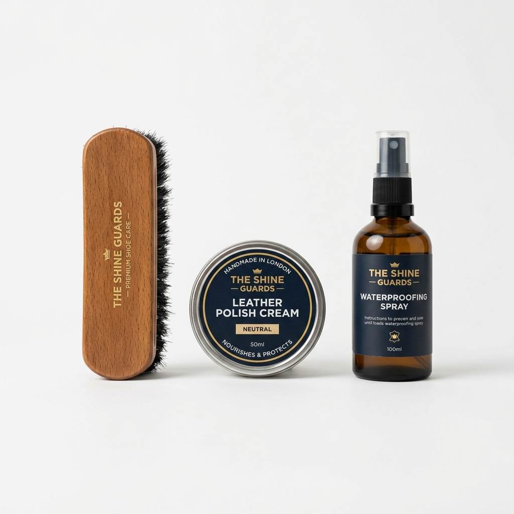
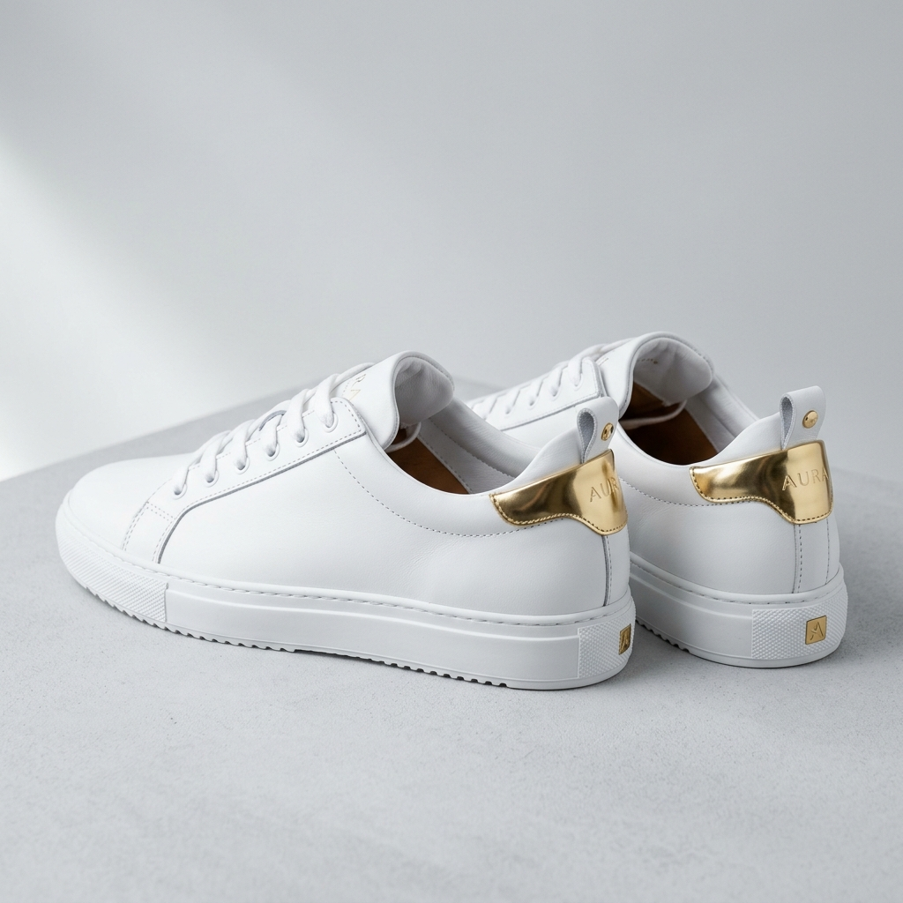

The Story of Aura Steps

Aura Steps 創立於 2024 年，我們的初衷很簡單：讓每位現代女性在追求優雅外在的同時，也能享受雙足踏實的舒適感。在都市叢林中奔波的女性，不該為了美貌而在腳尖默默忍受痛楚。
我們的品牌名稱「Aura Steps」意指「帶有獨特光芒的步伐」。我們深信，自信源於舒適。當妳的步伐輕盈自如，妳的靈魂便能散發自信的璀璨光芒。

一雙好鞋，是科學與藝術的結晶。我們與擁有三十年製鞋經驗的老師傅合作，每一款設計都經過反覆百次的楦頭調整，完美貼合亞洲女性的腳型特徵。
從精選義大利頂級小羊皮與牛皮，到獨家研發的三點式「雲朵減壓鞋墊」，我們不放過任何一處細節。從車線、拉鍊到五金配件，皆通過嚴格的拉力與耐用測試，陪伴妳走過春夏秋冬。

在我們呵護妳雙腳的同時，我們也溫柔地呵護這個地球。Aura Steps 致力於推動永續時尚，我們的皮革來源均為食品工業的副產品，並選用通過 LWG (Leather Working Group) 金牌認證的環保製革廠。
我們在製程中減少了 30% 的水資源消耗，並全線採用水性無毒膠水及 100% 可回收的環保紙質包材，讓環保時尚融入每一天的生活美學。